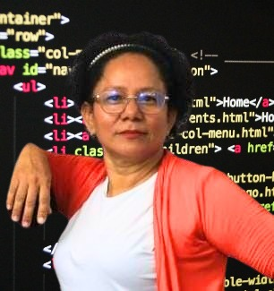

Nuestra Historia: El Corazón de Nuestro Propósito

El Origen – La Búsqueda Incesante
Soy una mujer de Buenaventura, desplazada por la vida, que llegó a Cali sin nada más que la determinación de salir adelante. Mis primeros intentos de emprendimiento, como las empanadas de camarones o el arreglo de uñas, se toparon con realidades económicas implacables y limitaciones físicas. La preocupación por mi futuro financiero, sin pensión y con la edad en contra, era una constante. Noches de súplica a Dios por una oportunidad se volvieron el motor de mis sueños.

El Giro – Un Sueño Hecho Realidad
Y mis sueños se hicieron más frecuentes, siempre en un salón de clases, sintiéndome joven de nuevo. La respuesta llegó en un correo: ¿qué me gustaría? Entre las opciones, 'animación' resonó con mi espíritu alegre y anímico. Elegí sin saber realmente de qué se trataba. Al año, la entrevista y la prueba confirmaron que este era mi camino. Las clases de habilidades blandas me revelaron un propósito claro: quería hacer tutoriales de finanzas.

El Aprendizaje – La Chispa de la Innovación
El mundo de la animación 2D se abrió ante mí, un terreno desconocido que conquisté con la ayuda de mi profesora y compañeros. La curiosidad me llevó a la animación 3D y, aunque el inglés fue un obstáculo inicial, la perseverancia me hizo regresar y aplicar. Los desafíos continuaron, desde las pruebas de admisión hasta los programas complejos. Pero una revelación en clase con la profesora María Teresa y una charla con la directora encendieron una idea: ¿y si combinamos la animación y la programación para enseñar finanzas? Fue en ese momento donde nació la visión de un videojuego.
La Misión – Un Juego para Transformar Vidas
A pesar de las dificultades y los momentos de querer desistir, el apoyo incondicional de mis profesores y compañeros en programación me mantiene firme. Aquí me encuentro, construyendo la base de mi sueño: un videojuego innovador de gestión financiera. Un juego que no solo divierta, sino que eduque y empodere a niños y jóvenes con las herramientas que a mí me hicieron tanta falta. Esta no es solo mi historia; es la promesa de un futuro financiero más seguro para muchos.
Un Desafío Global, Una Solución Innovadora
La falta de educación financiera es una brecha crítica que afecta a millones de jóvenes y sus familias. Métodos tradicionales de enseñanza a menudo fallan en captar la atención de las nuevas generaciones. Nuestro videojuego de gestión financiera no es solo entretenimiento; es una herramienta interactiva y accesible diseñada para enseñar principios económicos fundamentales, toma de decisiones y planificación, de una manera divertida y efectiva que resuena con la forma en que los jóvenes aprenden hoy.
Conoce a Quienes Hacen Posible Este Sueño
Detrás de cada gran proyecto hay un equipo apasionado. Somos un grupo diverso de soñadores, educadores, animadores y programadores, unidos por la visión de un futuro financiero más brillante para todos. Conoce a las mentes y los corazones que dan vida a 'Juego de Finanzas'.
Detrás de 'Juego de Finanzas' está una mujer aguerrida y soñadora que ha transformado sus propios desafíos en una poderosa misión. Con un espíritu sociable y un corazón empático, ella no solo visualiza un futuro mejor, sino que lo construye, guiada por su profunda sensibilidad y un amor genuino por la gente. Su incansable energía para motivar a los demás y su clara visión de ayuda social son el motor de este videojuego, diseñado para empoderar a la juventud con las herramientas financieras que cambian vidas.

Conocida por su calidez amorosa y su naturaleza sociable, la fuerza impulsora detrás de este proyecto es una visionaria aguerrida que ha recorrido un camino de resiliencia. Su profunda sensibilidad le permite conectar con las necesidades de otros, mientras su don para motivar a la gente y su arraigada visión de ayuda social la impulsan a crear un impacto duradero. Ella concibe 'Juego de Finanzas' como una extensión de su propio viaje, un puente innovador para que las nuevas generaciones superen obstáculos financieros y construyan un futuro próspero.